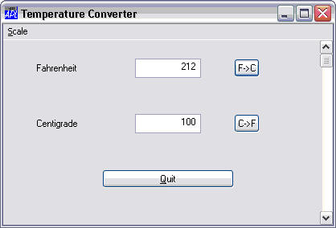
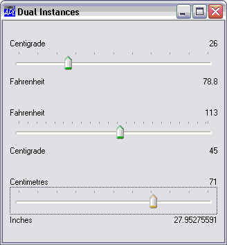

You may create user-defined Classes based upon Dyalog GUI objects. The Temperature Converter Class and Dual Class illustrate how this can be done.
To base a Class on a Dyalog GUI object, you specify the name of the object as its Base Class. For example, the Temperature Converter is based upon a Form:
:Class Temp: 'Form'
and the Dual Control is based upon a SubForm:
:Class Dual: 'SubForm'
Being based upon a top-level GUI object, the Temperature Converter may be used as follows:
T1←⎕NEW Temp(⊂'Posn'(68 50))

Notice that the :Implements Constructor statement of its Constructor Make:
:Implements Constructor :Base (⊂'Caption' TITLE),pv,⊂('Size' (30 40))passes on the application-specific property list (pv) given as its argument, but (in this case) specifies Caption and Size as well. The order in which the properties are specified in the :Base call ensures that the former will act as a default (and be overridden by an application-specific Caption requested in pv), whereas the specified Size of(30 40) will override whatever value of Size is requested by the host application in pv.
Other Instances can co-exist with the first:
T2←⎕NEW Temp(('Caption' 'My Application')('Posn'(10 10))The Dual Control requires a GUI parent but several Instances can co-exist, quite independently, in the same parent.
For example, function RUN creates a Form and 3 Instances of Dual; one to convert Centigrade to Fahrenheit, one to convert Fahrenheit to Centigrade, and the third to convert centimetres to inches.
∇ RUN;F;D1PROPS;D2PROPS;D3PROPS
[1]
[2] F←⎕NEW'Form'(('Caption' 'Dual Instances')('Coord' 'Pixel')('Size'(320 320)))
[3]
[4] D1PROPS←('Caption1' 'Centigrade')('Caption2' 'Fahrenheit')
[5] D1PROPS,←('Intercept' 32)('Gradient'(9÷5))('Value1' 0)('Range'(0 100))
[6] F.D1←F.⎕NEW Dual(('Coord' 'Pixel')('Posn'(10 10))('Size'(100 300)),D1PROPS)
[7]
[8] D2PROPS←('Caption1' 'Fahrenheit')('Caption2' 'Centigrade')
[9] D2PROPS,←('Intercept'(-32×5÷9))('Gradient'(5÷9))('Value1' 0)('Range'(0 212))
[10] F.D2←F.⎕NEW Dual(('Coord' 'Pixel')('Posn'(110 10))('Size'(100 300)),D2PROPS)
[11]
[12] D3PROPS←('Caption1' 'Centimetres')('Caption2' 'Inches')
[13] D3PROPS,←('Intercept' 0)('Gradient'(÷2.54))('Value1' 0)('Range'(0 100))
[14] F.D3←F.⎕NEW Dual(('Coord' 'Pixel')('Posn'(210 10))('Size'(100 300)),D3PROPS)
[15]
[16] ⎕DQ'F'
∇
Dual's Constructor Make first splits its constructor arguments into those that apply to the Dual Class itself and those that apply to the SubForm. Its :Implements Constructor statement then passes these on to the Base Constructor, together with an appropriate setting for EdgeStyle.
:Implements Constructor :Base BaseArgs,⊂'EdgeStyle' 'Dialog'